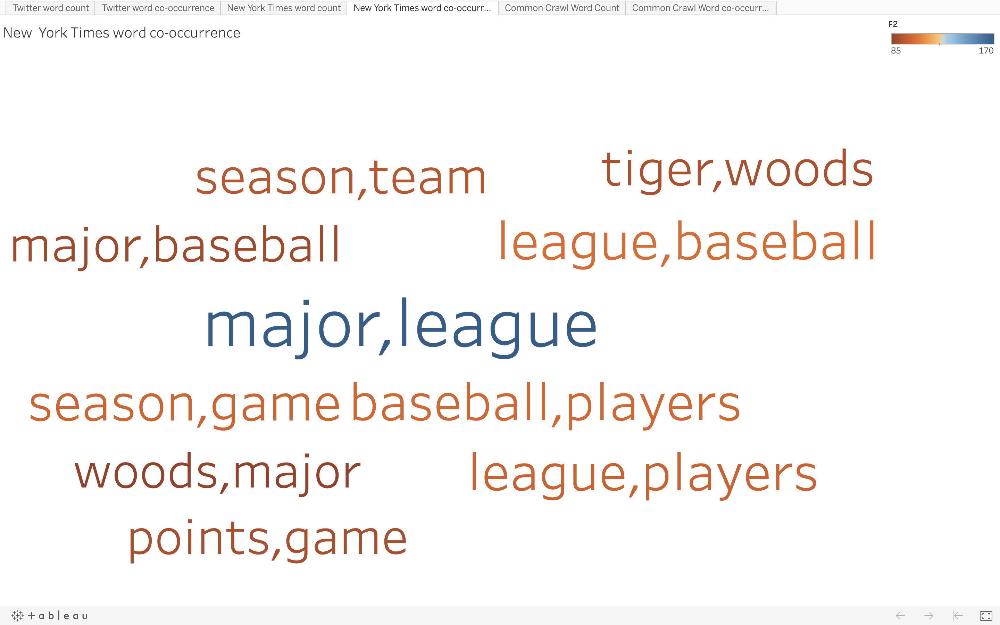

Text Processing using
Hadoop MapReduce
Topic for Data Collection : SPORTS
The data is collected for five subtopics of Sports namely, baseball, golf, football, tennis and basketball.
Description and Methodology
- The first step we needed to do was to collect 20K tweets from twitter, and 500 articles from New York Times and Common Crawl for the year 2019.
- For collecting data from twitter (TwitterFetchData.ipynb), we fetched the API keys from the twitter developer account, wrote the code in python such that it eliminates the duplicate tweets (Retweets) and collect tweets that are of this year only. We collected 4000 unique tweets from each sub topic.
- For collecting articles from New York Times (NYTFetchData.ipynb), we created an account in https://developer.nytimes.com and generated API for article search. Using the API we collected 100 articles on each subtopic.
- For collecting articles from Common Crawl (CommonCrawl.ipynb) we did index search on Common Crawl Index of 2019 namely [2019-04, 2019-09 and 2019- 13] for the domains restricted through news API and other sources. We applied filter to the URL so that the URL must contain our subtopic keyword to have more relevant data. For each record returned, we could extract the data in two ways one is to get the offset from the record and get the data from AWS Public Dataset of Common Crawl and the other is to get the URL and then use request method to get the data. One problem with the former method is you might find lot of segments which do not return the data or they are not reachable, plus the process is bit more time consuming as compared to the latter.
- After collecting data to continue the process, we created the set up for Hadoop on the Docker by following the Cloudera Docker Hadoop Document .
- For further steps, we designed and developed the code for Mapper (mapper.py) as well as Reducer(reducer.py). In the Mapper phase we removed all the stop words and did all the necessary processing of data using regex in order to get better results.
- After running the Map Reduce Job we got the output. Then for the top 10 words from word count, we processed the word co-occurrence Mapper(mapper1.py) and Reducer(reducer.py).
- We created an external script for converting output file to CSV (texttocsv.py) and then sorting the csv file (sort.py) for word count and word co-occurrence so that the top 10 can be used further for visualization.
- For visualization of the top 10 words and pairs we needed to create word clouds for each type of data collected. So, we used Tableau, you can create an account on tableau for a trial period and can perform visualization using drag and drop. After creating the workbook of all 6 word clouds, we published our workbook on tableau public, which can also be done using creating an account at Tableau public. Navigating through the entire web page, all six word clouds can be seen by clicking on 6 tabs.
Basic Process Flow
Detailed Process Flow
Visualisation Result
- Word Cloud for Word Count Twitter Data:
- Word Cloud for Word Co-occurrence Twitter Data:
- Word Cloud for Word Count NYT Data:
- Word Cloud for Word Co-occurrence NYT Data: 
- Word Cloud for Word Count Common Crawl Data:
- Word Cloud for Word Co-occurrence Common Crawl Data: